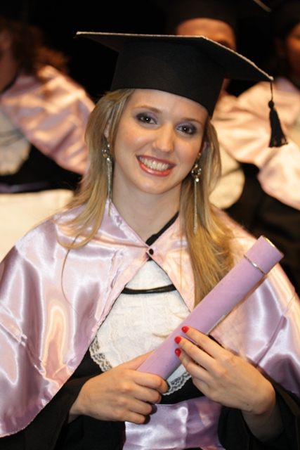

Who is teacher Ana?
Get to know me!
I always wanted to be a teacher! It was my favorite playtime. Even though I graduated and did a master's degree in History, English found its place in my heart during the first accidental substitution class I taught at the first school I worked as a history teacher. In 2012, I started teaching at a language school, believe it or not, I worked up to 54 hours a week! It was a great learning experience for me, but I started to feel constrained by the school's methodology, feeling like I couldn't provide my students with the help they deserved. I started teaching at the encouragement of my eternal partner, my husband. And in 2015, with a lot of uncertainty, not knowing how or where to begin, I had my first student. Since my workload at the school was very heavy, and I was afraid of getting laid off, I ended up with 5 private students by the end of the year.
But then, the first change in my life began. I got married and lost half of the hours I had at the school. Necessity pushed me to dive fully into private lessons. To the point that in 2018, I decided to leave the school definitively and live off private lessons. By the end of the year, my schedule was full, with nearly 40 students, and I was earning R$ 12,500! However, an end-of-year surprise led me to another change. In 2019, just before Bia was born, my first daughter, because I wanted to experience motherhood as intensely as I wanted to maintain my professional career, I needed to find time in my busy schedule of students and at the same time, maintain the same income.

And it was in this transformative moment of my life that my career took a new direction, and I took the first step to turn my private lessons into a profitable business, working half as much and maintaining an income above R$ 10,000. Seeing what I had achieved, a desire to share my experiences was born within me. I thought, 'It's not fair that only I get to experience motherhood so deeply and witness my professional career flourishing. And that's when my second daughter, Maria Luiza, came into the world. Forced to take maternity leave and training two teachers to replace me during that time, I realized: I had created a method!

At this moment, I realized how much I wanted to teach other teachers everything that my journey as a teacher-mother-entrepreneur had taught me. And the brand "Teacher Ana de Araujo" emerged, my microenterprise that was born to guide and steer the growth of other teachers who also want to make a good and dignified living from private lessons.
What I have to say today is: come with me on this journey to success.